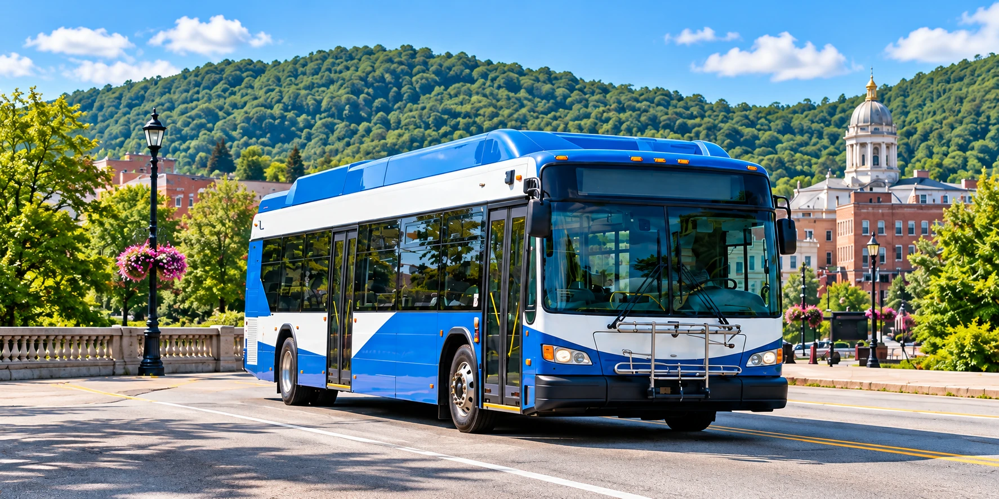

CAMBRIA COUNTY. CONNECTED.
Your day.
Your destination.
Your ride.
Find your route. Track your bus. Get where you need to go.
Connecting our communities.

A LITTLE PLANNING. A LOT OF POSSIBILITY.
Your ride. Your way to pay.
Urban adult fare examples from CamTran’s published fare page. Confirm eligibility and current prices before purchase.
Continue to CamTran PAY to purchase and manage your passes.
A ROUTE FOR YOUR ROUTINE
Where are you headed?
Find your connection across Greater Johnstown
and northern Cambria County.
Routes and stops from CamTran’s public tracker system. Timetables are not reproduced here; use live departures or the official schedules.
LESS GUESSING. MORE GOING.
Your next bus,
at a glance.
See where buses are right now and when the next one reaches your stop, on a full-screen live map.
Open the live tracker →JUMP TO A ROUTE
MORE WAYS TO STAY CONNECTED
Every rider belongs.
Find the service that fits your needs, with straightforward guidance at every step.
Accessible transportation ↗NEWS & EVENTS · DEMO
What’s happening.
ROOTED HERE. MOVING FORWARD.
More than a ride.
The people, places, and possibilities
that make our community.
A REAL PERSON. A HELPING HAND.